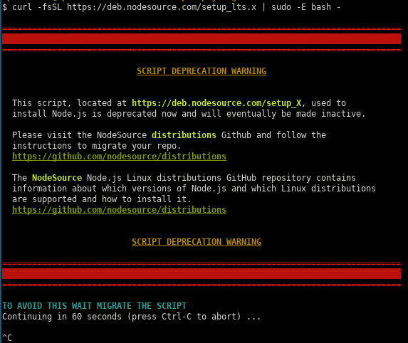
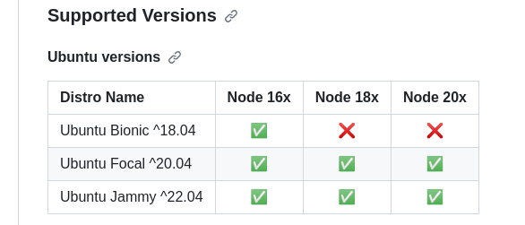

Initially, I tried to follow the instructions given here:
This set of instructions will install whatever version is the latest LTS version.
When a new version is released, you may have to run these instructions again to
pull the new install script for the new version.
# As a user with sudo
curl -fsSL https://deb.nodesource.com/setup_lts.x | sudo -E bash -
sudo apt-get install -y nodejs
# As root
curl -fsSL https://deb.nodesource.com/setup_lts.x | bash -
apt-get install -y nodejs
However, upon executing the script I encountered the following warning: 
As a result of the above warning, I killed the script and followed (as advised) the instructions given here.
First off, I checked that the latest suport Node version for my Ubuntu system (which is 20.04) was Node 20x: 
I then followed the instructions given below to first download and import the Nodesource GPG key:
sudo apt-get update
sudo apt-get install -y ca-certificates curl gnupg
sudo mkdir -p /etc/apt/keyrings
curl -fsSL https://deb.nodesource.com/gpgkey/nodesource-repo.gpg.key | sudo gpg --dearmor -o /etc/apt/keyrings/nodesource.gpg
… then to create the deb repository (where I used NODE_MAJOR=20):
NODE_MAJOR=20
echo "deb [signed-by=/etc/apt/keyrings/nodesource.gpg] https://deb.nodesource.com/node_$NODE_MAJOR.x nodistro main" | sudo tee /etc/apt/sources.list.d/nodesource.list
… and finally I run update and install as instructed:
sudo apt-get update
sudo apt-get install nodejs -y
Unfortunately, after all this effort I discovered that the new node version breaks the build of a very crucial application (IACS) so I had to downgrade back to Node 14 (which is where I started off) by doing the following:
sudo apt purge nodejs
After that (during which process I ignored all deprecation warnings which incidentally hadn't appeared the last time I run this script), I was back where I started:
$ node --version v14.21.3 mperdikeas@mp-ThinkStation-P320:~/repos/prj/cognitera-iacs/iacs-ui# $ npm --version 6.14.18… and my application build worked as before. I also verified that this is the correct correspondance between Node and NPM versions. See also here.
That would have been the end of the travail for a neurotypical person, but not for me. I subsequently carried away and decided to see whether I can upgrade to the latest version of npm by using:
sudo npm install -g npm@latest
Unfortunately the above failed badly as when I tried to run npm I got:
ERROR: npm v10.2.0 is known not to run on Node.js v14.21.3. ...I.e. I had managed to upgrade to npm version 10 but that version was incompatible with the Node version 14 I am using. Furthermore, I was unable to use the following to downgrade back to the compatible npm version for my version of Node:
$ npm install -g npm@6.14.18In fact the error message was exactly the same, I wasn't even able to run npm --version.
In the end, I was left with no other option available than to repeat the entire ordeal once again, i.e. purge Node (this also purges npm as part of the process) and re-install Node version 14 (which also installs npm version 6 as part of the process). This went smoothly (like the first time) and I was now back to where I started two hours later but with one important realization: That Node and npm are inextricably tied together and that I should never bother with installing npm independently. Just accept the version that comes bundled with Node.
However, there's more to it. At (what I thought was) the end of this ordeal I had the following:
$ node -v
v14.21.3
$ npm -v
6.14.18
Unfortunately, every time I tried to run npm I got:
$ npm install -g npm@6.14.17
TypeError: isexe is not a function
at E (/usr/lib/node_modules/npm/node_modules/which/which.js:82:7)
at F (/usr/lib/node_modules/npm/node_modules/which/which.js:91:7)
at which (/usr/lib/node_modules/npm/node_modules/which/which.js:92:5)
at load (/usr/lib/node_modules/npm/lib/npm.js:250:5)
at EventEmitter.npm.load (/usr/lib/node_modules/npm/lib/npm.js:246:5)
at /usr/lib/node_modules/npm/bin/npm-cli.js:79:7
at Object. (/usr/lib/node_modules/npm/bin/npm-cli.js:155:3)
at Module._compile (internal/modules/cjs/loader.js:1114:14)
at Object.Module._extensions..js (internal/modules/cjs/loader.js:1143:10)
at Module.load (internal/modules/cjs/loader.js:979:32)
/usr/lib/node_modules/npm/lib/npm.js:59
throw new Error('npm.load() required')
^
Error: npm.load() required
at Object.get (/usr/lib/node_modules/npm/lib/npm.js:59:13)
at process.errorHandler (/usr/lib/node_modules/npm/lib/utils/error-handler.js:208:32)
at process.emit (events.js:400:28)
at process._fatalException (internal/process/execution.js:167:25)
In fact the only npm command I was able to run was npm -v. Googling revealed that this case existed but there was only . Incidentally, the question was only a month old pointing to some recent breakage.
I frantically tried the same cycle a couple of times more (i.e. purging Node and then installing version 14) but I kept getting the same results.
In the end, at the point where I was beginning to despair, I decided to follow these instructions which I had also tried near the beginning of this ordeal with the difference this time of setting the NODE_MAJOR environmental variable to something less than 20. So I tried first with 18 but the resultant Node/npm configuration was breaking the build of my IACS application (mentioned above). I then tried with 16 and everything is working fine.
So, at the end of this ordeal I did manage to upgrade the Node/npm versions to the following:
$ node --version
v16.20.2
$ npm --version
8.19.4
(source: https://askubuntu.com/a/1291854) I executed the following commands (May 2022):
sudo apt update curl -sL https://deb.nodesource.com/setup_14.x | sudo bash - sudo apt install -y nodejs node -v
After running the last command I saw:
$ node -v v14.19.2
However, due to what I am almost confident are broken dependencies issues among my packages, the installation of node messed up my npm and I was unable to re-install it with conventional means. As such, I had to download the node tarball from here, explode the tarball in a directory and set in my PATH the path to node-v14.16.0-linux-x64/bin (wherein the npm executable is to be found). This was mighty iffy and unsettling.
npm install -g npm-check-updates
ncu -u
npm update # use this if node_modules already exists
npm install # use this otherwise
I've used the nodemon package for that. See target monitor in package.json in my ora2pg migration assessment github project
I tried this to update to the latest major version and it worked like a charm.
By combining this SO answer with that SO answer, one can arrive at the following solution:
export npm_config_cache=$(shell mktemp -d)
install:
@printf "using throw-away cache at: [$$npm_config_cache]\n"
npm install
@du -h $$npm_config_cache | printf "size of temp cache is: $$(du -h . | tail -1 | cut -f1)\n"
@rm -fr $$npm_config_cache
@printf "temporary cache at: $$npm_config_cache is now deleted.\n"
clean:
rm -fr node_modules/
rm -f es5/*.js
rm -f es5/*.map
npm cache -f clean # this is not really necessary as we're using a throw-away cache
npm run foo --ignore-scriptsnpm publish --ignore-scripts
npm installed)
export NODE_PATH=$NODE_PATH:~/.node_modules_global/lib/node_modules
var fs = require('fs');
// file is included here:
eval(fs.readFileSync('file-to-include.js')+'');
$ node
> fs = require('fs');
> fs.writeFileSync('fs.js', fs.toString())
> fs.writeFileSync('fs.readFileSync.js', fs.readFileSync.toString())
[Ctrl-C][Ctrl-C]
sudo npm install npm@3 -g
$ npm -version
3.8.0
apt-key adv --keyserver keyserver.ubuntu.com --recv 68576280
apt-add-repository 'deb https://deb.nodesource.com/node_4.x precise main'
apt-get update
apt-get install nodejs
$ ls /usr/bin/node
lrwxrwxrwx 1 root root 22 Mar 7 10:23 /usr/bin/node -> /etc/alternatives/node*
$ ls /etc/alternatives/node
lrwxrwxrwx 1 root root 15 Mar 7 10:23 /etc/alternatives/node -> /usr/bin/nodejs*
~/playground/repo-wide-scripts).
GuardfileGemfile to be usedsudo gem install guard-livereloadsudo apt-get install bundlerln -s ~/playground/repo-wide-scripts/Gemfileln -s ~/playground/repo-wide-scripts/Guardfileln -s ~/playground/repo-wide-scripts/run-guardrun-guard which ultimately
links to this script).
npm tool in the home folder as described
here.
However with this approach, one (at least in Ubuntu 14.04) cannot use the nodejs executable
but has to use the node one that is available with the nvm tool.
This is described here in the section "How to Install Using NVM".
NB:I actually had to use sudo curl .. | sh to install it.
npm prompt to also do nvm link prompt
(as described in the link above). An example is given in:
~/playground/javascript-you-dont-know